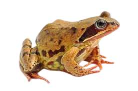

Katak adalah hewan amfibi dari ordo Anura yang memiliki tubuh pendek, kaki belakang panjang dan kuat untuk melompat, serta kulit lembap yang membantunya bernapas. Mereka hidup di lingkungan berair seperti sungai, kolam, dan rawa, serta aktif di malam hari untuk memangsa serangga, cacing, dan hewan kecil lainnya. Katak tidak berekor saat dewasa, memiliki mata besar yang membantu berburu, serta berkembang biak dengan bertelur di air, di mana larvanya (kecebong) mengalami metamorfosis sebelum menjadi katak dewasa. Keunikan katak antara lain adalah kemampuannya menyerap air melalui kulit, menggunakan lidah lengket untuk menangkap mangsa, dan beberapa spesiesnya memiliki racun sebagai mekanisme pertahanan. Selain itu, katak berperan penting dalam ekosistem sebagai pengendali populasi serangga dan indikator kesehatan lingkungan.

Katak air adalah amfibi yang hidup di lingkungan perairan seperti sungai, danau, atau rawa dengan tubuh yang ramping, kulit lembap, dan kaki berselaput yang membantunya berenang dengan cepat. Hewan ini bernapas melalui paru-paru dan kulitnya, sehingga membutuhkan lingkungan yang lembap agar tetap bertahan hidup. Katak air memiliki berbagai warna dan pola sebagai bentuk kamuflase untuk menghindari predator. Selain itu, mereka adalah pemangsa serangga, cacing, dan hewan kecil lainnya, berperan penting dalam menjaga keseimbangan ekosistem perairan.

Katak beracun adalah amfibi kecil yang memiliki warna mencolok seperti merah, biru, kuning, atau hijau sebagai peringatan kepada predator bahwa mereka beracun. Racun yang dihasilkan berasal dari makanan yang mereka konsumsi di habitat alaminya, seperti semut dan serangga tertentu. Salah satu spesies terkenal adalah Phyllobates terribilis, yang dianggap sebagai hewan paling beracun di dunia, dengan racun cukup kuat untuk membunuh beberapa manusia sekaligus. Katak beracun banyak ditemukan di hutan hujan Amerika Tengah dan Selatan, terutama di Kolombia dan Brasil. Meskipun beracun di alam liar, katak ini dapat kehilangan toksisitasnya jika dipelihara di lingkungan buatan tanpa akses ke sumber makanannya yang alami.

Katak tanduk adalah sejenis katak yang memiliki bentuk tubuh unik dengan tonjolan menyerupai tanduk di atas matanya, yang berfungsi sebagai kamuflase di habitat alaminya. Katak ini biasanya ditemukan di hutan hujan tropis Asia Tenggara, seperti Indonesia, Malaysia, dan Thailand. Warna tubuhnya yang menyerupai dedaunan kering membantu mereka bersembunyi dari predator. Katak tanduk termasuk predator penyergap yang memangsa serangga, cacing, dan hewan kecil lainnya. Selain itu, mereka memiliki kemampuan bertahan hidup yang baik dengan beradaptasi terhadap lingkungan lembap dan berdaun lebat di hutan.